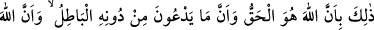
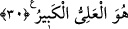
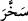

(katmaktadır)” kelimesi muzâri siygasında kullanılmıştır. Buna mukabil güneş ve ayın
boyun eğdirilmesinde tekrar ve yenilenme olmadığı için “ kelimesi mâzî siygasında
kullanılmıştır. Tekrar ve yenilenme, bu boyun eğdirmenin eserlerindedir. Nitekim bu
hususa şöyle işâret edilmiştir:
Güneş ve ayın “her biri” Allah Teâlâ’nın takdir ettiği “belli bir vâdeye” kıyâmete
“kadar” gün sayısınca devamlı olarak kendine has günlük zorunlu dönüş hareketine
göre “akıp gider.”
Hasan Basrî (r.h.)’tan rivâyete göre, güneş ve ayın akıp gitmesi ancak kıyâmet günü
son bulur. Çünkü o vakit bunlar üzerinde vazifeli bulunan melekler ölür. Bunların her
biri ruhsuz beden gibi boş kalır. Nurları söndürülerek cehenneme atılırlar. Böylelikle
güneşe, aya ve ateşe tapanlara, bunların tanrı olmadıkları gösterilmiş olur. Çünkü bunlar
tanrı olsalardı, azabı kendilerinden savmaları gerekirdi.
Allah Teâlâ onların akışlarını, yörüngelerinde kendilerine mahsus hareketleri olarak;
belli olan süreyi de dönüşlerinin son bulması olarak belirlemiştir. Yine Allah, güneşin
dönüş süresini bir yıl, ayın da bir ay olarak tâyin etmiştir. Buna göre âyet, güneş ve ayın
emre amâde kılınmasının hikmetlerini beyan etmekte ve gece ile gündüzden birinin
diğerine nasıl girdirildiğine dikkat çekmektedir. Bunlar ise güneş ile ayın günlük
dönüşlerine göre meydana gelmektedir.
“Ve Allah, yaptıklarınızdan tamamen haberdardır.” İşin gizliliklerini ve
inceliklerini bilendir. Bu eşsiz sanatı ve muazzam nizâmı seyreden kimse, bunları
Yaratan’ın, kendinin yaptığı bütün amelleri ve onun her türlü detaylarını kuşattığı
gerçeğinden gâfil kalmaz.
30. Çünkü Allah, hakkın ta kendisidir; O’ndan başka taptıkları ise hiç şüphesiz
bâtıldır. Gerçekten Allah çok yüce, çok uludur.
Allâh’ın ilminin genişliği, kudretinin şümûlü, san‘atının hârikulâde oluşu ve bunları
ancak Bârî olan Allâh’ın yapabileceği konusunda anlatılanlar böyledir. “Çünkü sadece
Allah”ın ulûhiyeti “gerçektir. O’ndan başka taptıkları” putların ulûhiyeti ise “hiç
şüphesiz bâtıldır.” Çünkü onlar yukarıda anlatılan şeylerin hiçbirine güç yetiremezler.
O halde onlara tapmanın asla bir faydası yoktur. Allâh’ın tek gerçek ilâh olduğunu
belirtmek, O’nun dışındakilerin ilâhlığının bâtıl olduğuna delâlet etmekle birlikte bu
hususun âyette açıkça beyan edilmesi, tevhid konusuna verilen büyük ehemmiyeti ortaya
koymaktır. “Gerçekten Allah” her şeyden “çok yüce,” kendisine hükmetmek
isteyenlerden “çok uludur.” Hepsi O’nun kibriyâsı/büyüklüğü yanında çok küçük ve